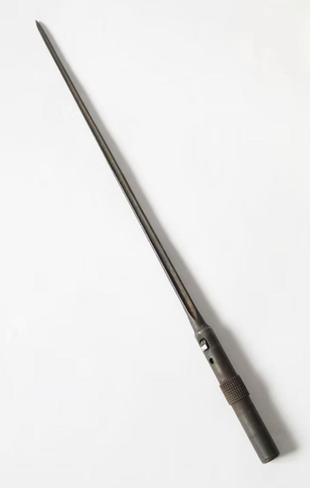

Introduction
Les armes françaises de la Seconde Guerre mondiale représentent un ensemble varié de modèles issus de plusieurs décennies d’évolution. Entre modernisation rapide, héritage de la Grande Guerre et innovations techniques, l’armement français de 1915 à 1945 reflète une période complexe où coexistent équipements anciens et armes de conception récente.
Cette section du Musée HOP WW2 présente l’ensemble des armes blanches, fusils, pistolets, fusils-mitrailleurs, mitrailleuses et armes d’appui utilisées par les forces françaises durant le conflit. Chaque fiche offre une description détaillée, des photographies, et les éléments permettant d’identifier un modèle authentique.
Présentation générale
La baïonnette du fusil MAS‑36 est l’une des armes blanches les plus reconnaissables de l’armée française durant la Seconde Guerre mondiale. De type cruciforme, elle est conçue pour être robuste, simple et efficace, tout en étant intégrée directement dans le fût du fusil.
Contrairement aux baïonnettes traditionnelles, elle ne possède pas de poignée : elle est exclusivement destinée à être fixée sur le MAS‑36, ce qui en fait un modèle unique dans l’armement français.

Caractéristiques
- Type : baïonnette cruciforme
- Longueur : environ 40 cm
- Acier bronzé ou phosphaté
- Fixation intégrée dans le fût du MAS‑36
- Absence de poignée (utilisation uniquement sur le fusil)

Histoire & Contexte
Introduite avec le fusil MAS‑36, cette baïonnette accompagne les soldats français durant la campagne de 1939–1940. Sa conception cruciforme permet une grande solidité et une pénétration efficace, héritée des modèles de la Première Guerre mondiale.
Son système de rangement interne dans le fût du fusil est une innovation française, permettant au soldat de transporter son arme blanche sans étui ni encombrement.
Authentification
- Acier d’époque avec bronzage ou phosphatation
- Forme cruciforme nette et régulière
- Numéro de série parfois présent
- Compatibilité parfaite avec un fusil MAS‑36